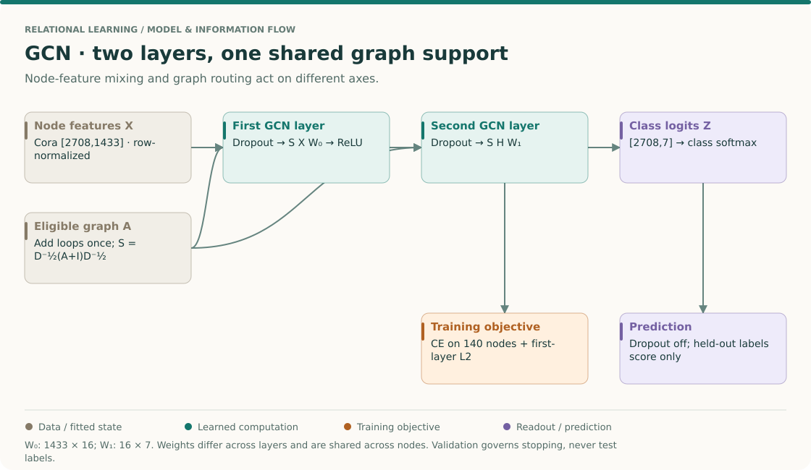
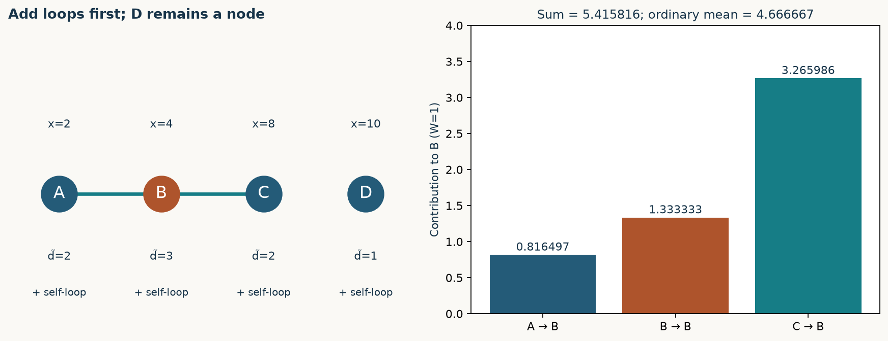
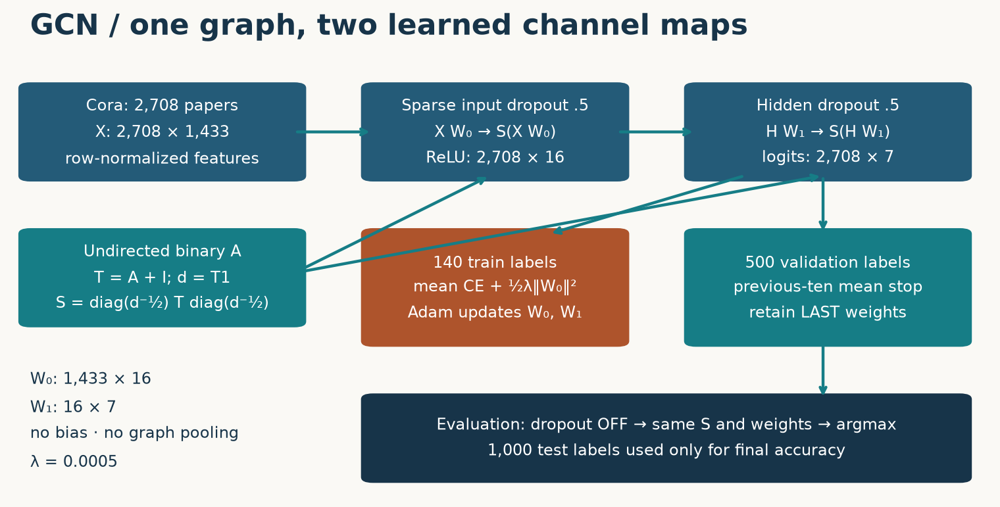
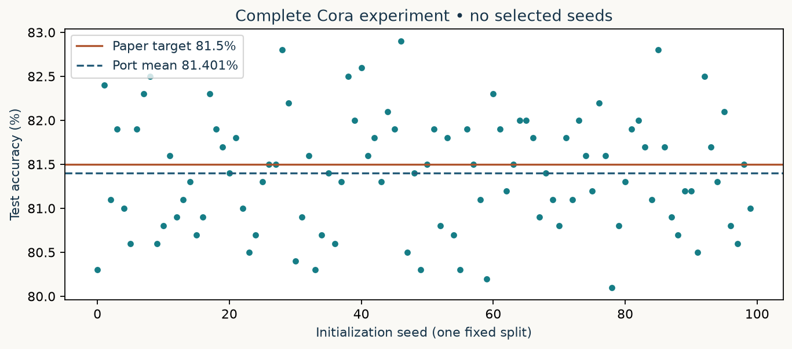
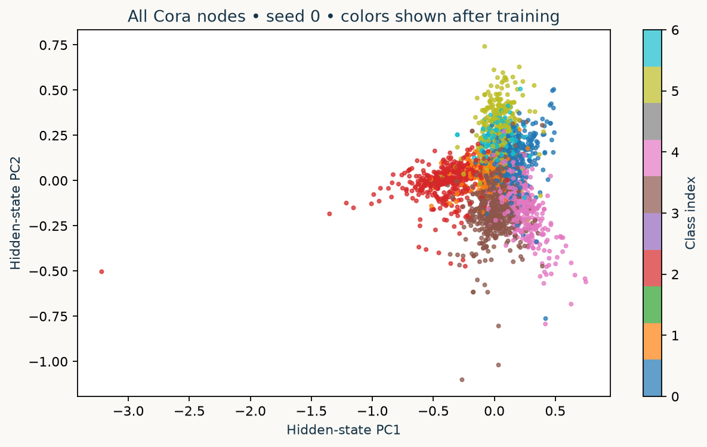

Year 3 · Quarter 1 · Lesson 082
GCN: normalize, propagate, reproduce
Your win: explain every coefficient in a trained GCN¶
In L081, you chose message, aggregate, update and readout functions. That interface leaves a question open: which messages should a particular model send? Here you will derive and implement one answer, then train it on the complete Cora citation graph. This gives our relational-learning mission a concrete baseline for learned aggregation. Cora is a static citation task; it does not establish an advantage on a temporal database.
Route: 25 minutes for retrieval, arithmetic and the mechanism; 35 minutes for the three coding exercises. Run the separate 100-initialization experiment afterward. The full model and trainer are visible in the notebook. Exercises · Reference card · Reproduction contract.
Retrieve before reading¶
Close L081 and write: (1) what must happen to node predictions when node IDs are permuted? (2) why does a one-round update read old states? (3) how can an unlabeled node affect a labeled node's prediction without its label entering the loss? Keep these answers for your EXIT comparison.
THE BIG PICTURE · LESSON 082
Build on what you know. Lesson 81 left M and U open. GCN chooses a fixed graph-dependent coefficient and a learned feature transform. The familiar residual and attention layers from Lessons 42–46 help separate topology, weights and nonlinearities.
The next question. Lesson 83 asks how to compute on new nodes and bounded neighborhoods. Lesson 85 asks what repeatedly applying graph mixing can erase. Neither question is answered by one high Cora score.
Open the SSL → relational → graph model map · Work the cold retrieval first, then spend 15–20 minutes tracing this overview before the detailed mechanism and lab.
Derive the coefficient before trusting the layer name¶

Read from the practical layer back to its motivation¶
Begin with Kipf & Welling Eq. (2), then §§2.1–2.2. First identify every dimension in H′=σ(SHW). Then read how the spectral approximation motivates the layer. This order lets the derivation explain a computation you can already carry out.
Derive one receiving node's update¶
- Start with adjacency, not degrees from another graph. For A—B—C, add one self-loop per node. The augmented degrees are 2,3,2. Computing degrees before adding loops would make both the self and neighbor coefficients wrong.
- Apply normalization on both ends. The message A→B gets 1/√(2×3), B→B gets 1/3, and C→B gets 1/√(2×3). Source degree matters as well as receiver degree. This is why a uniform incoming mean is not the same operator.
- Multiply the example values. With h=[2,4,8] and scalar W=1, the contributions are approximately 0.8165, 1.3333 and 3.2660. Their sum is 5.4158. The row's coefficients sum to about 1.1498, so the result need not be a convex average.
- Introduce feature learning separately. With F input coordinates and D outputs, W has shape [F,D]. The same W transforms every node. S has shape [N,N] and carries graph structure. For a linear step, S(HW)=(SH)W; inserting nonlinearities or dropout between these products can break that equivalence.
- Compose the actual classifier. The first layer gives [N,16], followed by ReLU. The second gives [N,7] logits for Cora. Graph propagation shares S across layers; feature weights differ. Training dropout is disabled at inference.
- Mask the loss, not necessarily the graph. In this transductive experiment the full feature graph is allowed. Cross-entropy reads only training targets. Removing test nodes changes the task; retaining test labels in the objective invalidates it.
Check: what does an isolated node do after adding its self-loop?
Its augmented degree is one and its support row contains only a self coefficient of one. The layer applies its learned feature transform and activation without receiving any neighbor information. Without the self-loop, the behavior would require a different convention.
Your intermediate artifact: submit the augmented adjacency, degree vector, three coefficients and output for B. Then perturb only a held-out label and verify the training objective is unchanged. The arithmetic check and the access check establish different properties.
1 · A graph-specific choice of message¶
Let A contain undirected edges and no self-loops. Add I before computing degrees. Write T=A+I, dᵢ=ΣⱼTᵢⱼ and Sᵢⱼ=Tᵢⱼ/√(dᵢdⱼ). The layer is
H′ = σ(SHW).
Rows index nodes; columns index channels. W mixes channels with parameters shared across all nodes. S routes those mixed channels between nodes. In L081's language, the message j→i is HⱼW/√(dᵢdⱼ), aggregation is a sum over neighbors including i, and the update applies σ. Each layer has its own W; the graph support S is reused. Node classification needs one prediction per node, so there is no graph pooling.
This is the propagation rule in Kipf & Welling, §2, Eq. 2. The dense implementation below exposes the algebra; the lab uses sparse matrices for the full graph.
T = A + np.eye(len(A))
d = T.sum(axis=1)
S = T / np.sqrt(d[:, None] * d[None, :])
H_next = np.maximum(0, S @ H @ W)
2 · Trace an unequal-degree graph¶
Take A—B—C and an isolated D, with scalar states [2,4,8,10] and W=1. After adding loops, degrees are [2,3,2,1]. Before looking below, calculate B's output and compare it with an ordinary mean over A, B and C.

B receives 2/√6 from A, 4/3 from itself and 8/√6 from C: 5.415816. The ordinary self-inclusive mean is 14/3=4.666667. GCN weights are symmetric, but their row sums need not be one. D retains 10 because its augmented degree is one. Self-loops preserve a route for its own features; they do not guarantee perfect identity preservation after learned channel mixing and activation.
Intervention: set C=20. B becomes 10.314796. A is unchanged after one layer because C has no direct edge to A. After two layers C can influence A through B. This locality statement holds for feature changes with a fixed graph; changing topology can also change normalization coefficients. In particular, adding an edge incident to B changes the A←B coefficient even if the new node is not A's neighbor.
3 · Why this normalization has a spectral story¶
A graph Fourier filter transforms a signal into the eigenbasis U of the normalized Laplacian L, scales its spectral components, and transforms back. Explicitly computing U is expensive. The paper motivates local filters using polynomials in L; multiplying a vector by a sparse polynomial avoids that eigendecomposition. Keeping only degree one and approximating the largest eigenvalue by 2 gives a self term plus a normalized-neighbor term. Tying their coefficients yields θ(I+D⁻¹ᐟ²AD⁻¹ᐟ²).
The next step matters: replacing that operator with S is a renormalization choice, not an algebraic equality. The original operator can amplify a component by up to two on each application. Normalizing after adding loops controls this repeated propagation. With multiple channels, learned matrices replace the scalar coefficient. You need not calculate eigenvectors to implement the resulting local operation. Read §2.1–2.2, Eqs. 3–9 and identify which steps are approximations and which are definitions.
4 · Model architecture: the full Cora path¶

Cora supplies 2,708 nodes, 1,433 input features and seven classes. The pinned release defines 140 training labels (20 per class), 500 validation nodes and 1,000 test nodes. Remaining nodes participate in propagation without entering these supervised masks. Features are row-normalized. The graph is made undirected and binary, then augmented and normalized once. Two bias-free layers use widths 1433→16→7, ReLU between layers, and 0.5 dropout on sparse input values and hidden activations during training.
# Evaluation path. Training additionally applies feature and hidden dropout.
H = torch.relu(propagate(S, X, W0))
logits = propagate(S, H, W1)
loss = cross_entropy(logits[train], y[train]) + 0.0005 * 0.5 * W0.square().sum()
Cross-entropy consumes logits; do not apply softmax first. Softmax is useful when reporting class probabilities; argmax of logits already gives the predicted class. The complete executable port and notebook include initialization, sparse dropout, data loading, optimizer and stopping—not just this schematic.
5 · Transductive access is a task contract¶
Training can see the features and edges of test nodes. Their labels never enter gradients or early stopping. An unlabeled node can send a useful feature vector to a labeled neighbor; the labeled node's loss then updates the shared weights used everywhere. That is transductive semi-supervised learning, not training on the test labels. Conversely, a deployment where future rows or edges are unavailable cannot inherit this permission.
Label intervention: change test labels while holding features, graph and masks fixed. Training gradients and the stopping epoch must stay unchanged; final test accuracy may change. Feature intervention: change an unlabeled neighbor's features. Training predictions may change. The distinction is what the lab's masked-loss check protects. A separate full-training intervention changes all test labels and checks that every validation loss and the stopping epoch remain identical; it also verifies a fresh download of all eight raw data files. See the paper's experimental setup and released loader and preprocessing.
6 · Reproduce a named result, with a declared boundary¶
The target is Table 2, GCN, Cora: 81.5%, averaged over 100 initializations. We run the full graph and released split, 200-epoch maximum schedule, and 100 initializations; no dataset cap or shortened training preset is substituted. A ±1 percentage-point mean-accuracy window is our declared educational acceptance criterion, not a tolerance asserted by the paper and not evidence of implementation identity.
Fresh author run: 100 initializations; mean 81.401%, sample SD 0.658 percentage points, standard error 0.066 percentage points. Difference from paper target: -0.099 percentage points. Per-seed scores and complete validation traces. These are measured port results, not original-framework parity.

The released trainer uses Adam at .01. Its regularizer applies to the first layer only. After zero-based epoch 10, it stops when the current regularized validation loss exceeds the preceding ten-loss mean. It evaluates the last weights. “Patience ten” with best-weight restoration is a different experiment. The paper's stopping prose and release rule differ; this lab follows the release.
Framework and seed differences remain: this is a PyTorch port of a TensorFlow 1 implementation; kernels, dropout RNG and Adam numerical behavior are not bitwise equivalent. The original 100 seed identities were not published; we declare seeds 0–99. The checked commit identifies the release we used, not a proven submission-era snapshot. Repeated runs share one dataset and split; sample SD describes initialization variability, not uncertainty across datasets. Original TensorFlow training, other Table 2 datasets and baseline rows are NOT_RUN. Live Colab and deployment are NOT_CHECKED.
7 · Inspect the representation without treating a plot as a score¶

This projection uses the final hidden states of a separate, declared seed-0 diagnostic with the same trainer. PCA is fitted to all nodes for visualization; test-label colors are added only after training. The axes explain directions of variance, not class confidence. Overlap in two dimensions neither refutes nor establishes performance in the full 16-dimensional representation. The saved per-seed test scores carry the quantitative evidence.
8 · TODO → CHECK → EXIT
Open the student notebook. Each TODO is called by the real Cora training path:
- Normalize: construct sparse S from loop-free binary adjacency. CHECK the exact four-node matrix, isolated D and a relabeled graph. Deliberately try row normalization and explain the failed coefficient.
- Propagate: implement S(HW) for sparse or dense H. CHECK against independent dense algebra and node permutation; do not insert ReLU inside this helper because the output layer needs logits.
- Mask: implement mean cross-entropy on the selected nodes plus first-layer L2. CHECK zero direct logit gradients outside the mask and invariant loss under held-out label changes. Explain why hidden states of unlabeled neighbors can still receive gradients through routing.
Run one diagnostic first, then all 100 initializations without changing the configuration in response to test scores. Submit l082-exit.json, the complete results JSON and your written explanation of one failed intervention. The notebook records measured values and checks the declared accuracy window; it does not claim mastery for you. Return tomorrow to reconstruct B's three coefficients and the stopping rule without notes.
Ask the agent follow-up questions or bring a failed CHECK: include your prediction, actual value and smallest example. Next, L083 asks how to aggregate when the graph grows and full-graph training becomes impractical. GraphSAGE changes the sampling and aggregation recipe; distinguish that practical shift from the false claim that GCN's weight matrices are tied to particular node IDs.
Primary reading: Kipf & Welling (ICLR 2017), §§2–3 and Table 2. Pinned implementation. Evidence and exact commands.